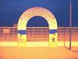
Trouville, un festival qui se lance doucement. Il y a quand même des annonces et des affiches, un repas offert le dimanche midi (et une douche quand on veut)... Des avantages : le cadre et une plage, un local à disposition avec toutes commodités, bien situé, dominant le terrain de vol, possibilité de garer (et de dormir) sur la plage...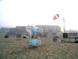
Devant les grandes bâtisses de bord de mer, du brouillard le dimanche matin, et un vent quasi-nul. On sort les indoors !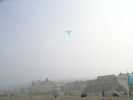
Je serai pratiquement seul à voler le dimanche matin avec ma raie manta (63 g, mais je peux faire mieux) qui n'avait jamais connu plus de 7 m de ligne dans ses gymnases habituels...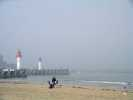
La plage est bien, en pente douce, avec du sable fin. La Touques passe à côté avec son chenal et ses balises...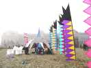
Eric a monté ses jolies bannières, assez rigides pour tenir sans vent, astucieux ! Derrière, l'énorme établissement qui fait Bains, Casino, et Salon des Antiquaires aujourd'hui...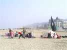
Les Pirates, avec un (gros) zeste de Gwenn Ha Du sont là et ont monté leur tente-drapeau, dont on ne peut pas vraiment dire qu'il flotte... A gauche, Will prépare un show taurin avec sa cape-en-Nasa et p'tit Michel...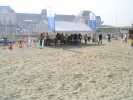
Sous le barnum, un atelier de CVs enfants, qui a bien marché, avec ses coccinelles à queue, bien stables. A 3 h, les 150 CVs étaient partis...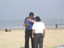
Thierry explique à 'Tophe le fonctionnement de sa super nacelle photo/video.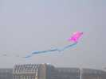
Ah, un autre cerf-volant prend l'air...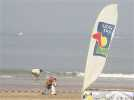
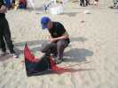
Eric sort son pilotable indoor, mais il y a une petite préparation sur les lignes à effectuer...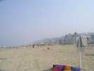
Le brouillard se lève un peu, et avec l'ensoleillement, une petite brise de mer va se lever (et retombera en fin d'après-midi, évidemment) !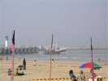
Trouville n'est pas seulement une station balnéaire, c'est aussi un port de pêche avec des chalutiers très larges et très courts, adaptés à la mer de par ici. Ils sortent (ou rentrent) à marée haute, mais peuvent rester à flot dans le port...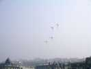
Il y aura même un team de pilotables 2 lignes, on ne se refuse rien malgré le vent léger !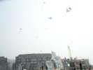
Et en l'air, tous les cerfs-volants d'enfants forment un fond non négligeable, preuve de leur stabilité...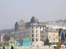
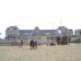
Les Thermes-Casino restent aussi parfaitement indifférents à cette activité. De plus, c'est dommage, ils nous masquent à la vue depuis la ville...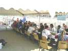
A midi, on déménage (momentanément) l'atelier pour un petit pot et un repas à l'ombre en commun offert par le festival !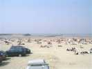
La plage se remplit de baigneurs, malgré 2 handicaps : c'est quand même tôt dans la saison, et pour s'exposer au bronzage, il faut de la volonté. De plus, il est interdit de se baigner ici, à cause des courants...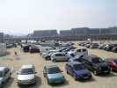
Petit à petit, la plage se remplit de sable. Les voies d'accès sont goudronnées, mais les égoïstes se garent dessus, et au départ, il y aura besoin de bras pour les autres !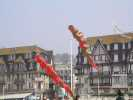
Bon, le vent s'est un peu levé, on en profite. Les belles manches à air dorées et torsadées des Sens Ciel prennent l'air et leur coléoptère du même tabac fera aussi un petit vol (suspendu, évidemment à un vrai CV)...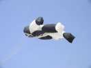
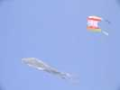
Ce très grand flow-form volera tout l'après-midi, tenu en main en permanence sous surveillance constante, il faut être costaud, même si le vent ne tire pas des masses !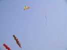
Et voilà le porteur des fameuses manches à air de luxe : un delta rouge et jaune tout ce qu'il y a de classique !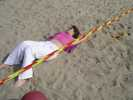
Les baigneuses (certaines...) ont l'air d'apprécier le rapprochement avec les cervolistes...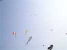
Finalement, je peux monter Megoel, et il y a vraiment du monofil en l'air pour un rassemblement débutant !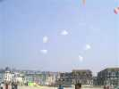
Sur l'autre terrain (oui, il y a deux terrains) les pilotables. Les Pirates ont créé un team de Nasas, pas officiel avec entraînements programmés, mais ils se débrouillent et meublent bien le festival, volant même par tout petit vent.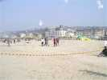
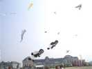
Jean-François a réussi à mettre en l'air ses 2 bonshommes sous des pyrodeltas, plus le bonhomme de neige sous le gros flow-form.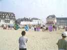
Avec nos rokkakus, on organise aussi un combat enfant sous tutelle. Puis 2, puis 3, il y a de la demande... Puis on ne se quitte pas sans s'en faire un petit entre nous pour conclure...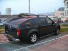
En partant, ce monstre sur le parking ! Il aurait pu aller sur le sable, mais ça doit peser plus de 2 tonnes, pas intérêt à l'enliser !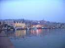
Après la fête, je dormirai là. Je vais faire un petit tour dans la ville pour marcher un peu normalement au lieu de piétiner dans le sable. Je vous ai dit que Trouville était un port de pêche. Tous les chalutiers sont alignés au bord de la Touques et de la grand-rue, c'est pittoresque...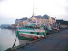
Cette géniale photo exprime en un saisissant raccourci la superposition et l'imbrication des activités touristique et halieutique, les 2 ressources de Trouville !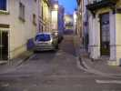
Sorti de la promenade au bord de la rivière, Trouville est une petite ville pittoresque avec ses ruelles tortueuses et pentues sur le flanc du côteau.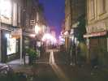
Parallèlement à la Touques, il y a aussi un peu en hauteur une rue piétonne pleine de maisons anciennes.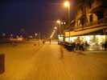
Les planches de Trouville sont moins connues que celles de Deauville, mais bien entretenues (trop nickel pour être pittoresques...).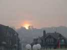
J'ai dormi à Trouville, et je suis reparti le lendemain dès le soleil levant... Ca n'est quand même pas très tôt, parce qu'il se lève très haut sur la colline !